| 日付 | 2009年9月5日（土） - 2009年9月6日（日） | ||||
|---|---|---|---|---|---|
| 山域 | 越後 | ||||
| メンバー | 単独 | ||||
| 山行形態 | 前夜発1泊2日無人小屋泊 | ||||
| アクセス | 電車、バス | ||||
| ルート (Map) |
|
新潟の奥地に御神楽岳という山がある。
広く名の知られた山ではないが、下越の谷川岳と呼ばれる、
岩壁に覆われた名峰で、長い間気になっていた。
夜行列車がないと行けない遠い山なので、今までなかなか行けなかったが、
今回ムーンライト越後を利用して登ってみることにする。
前日
ムーンライト越後に乗って新潟に向かう。
この電車は臨時便に格下げになって、今年の夏は恐らくこれが最後。
これを逃すと今年はもう新潟の山に登れなくなってしまう。

1日目
津川駅到着。ずいぶん静かな駅だ。
ここで2時間半バスが来るのを待つ。
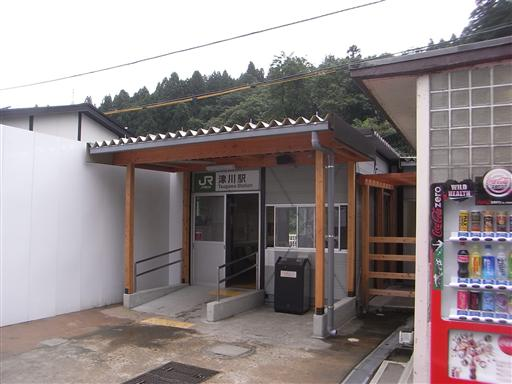
暇なので少し付近を散歩する。
麒麟橋という変わった名前の橋から阿賀野川を眺める。
水の流れがほとんどない湖のような川だ。
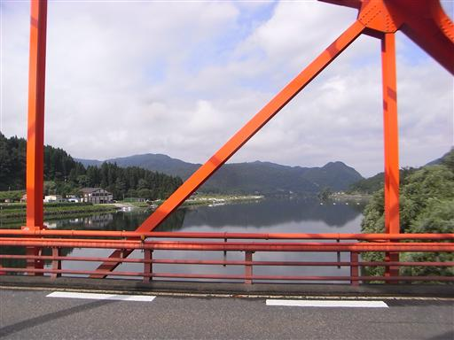
9:57 八田蟹バス停到着。標高120m。
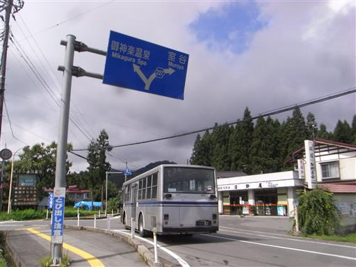
しばらくは車道を歩いて登山口を目指す。
付近はのどかな集落が広がっている。
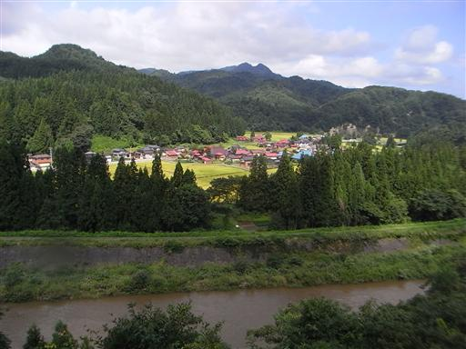
車道の脇に小さな阿修羅の像がある。
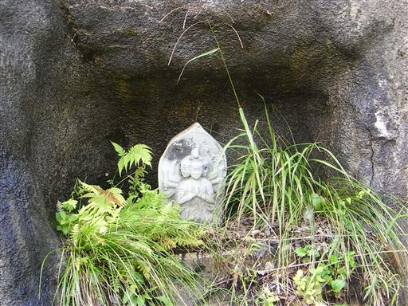
車道の終点には車が3台停まっていた。
その直後から藪が覆いかぶさって急に道が悪くなる。
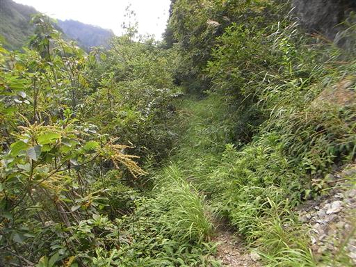
小さな沢を何度も渡りながら歩いていく。
岩とコケに覆われた沢の渡渉は信じられない位に滑る。
ロープがなければ歩けないくらいだ。
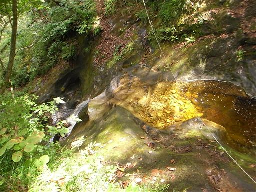
上流側は美しい滝が流れ落ちている。
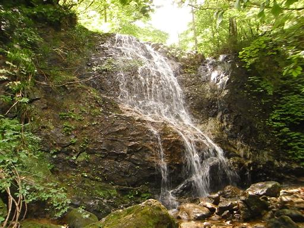
川沿いの平坦な道を歩き終えて、ようやく御神楽岳登山口に到着する。
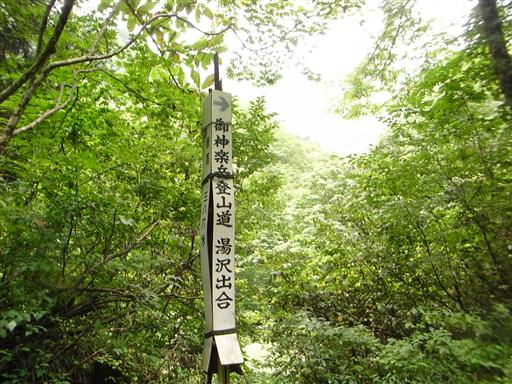
樹の間からは御神楽らしい岩壁がわずかに見える。
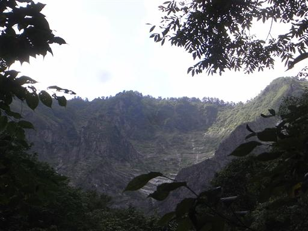
登山道に入ると初っ端から鎖場が始まる。
この山のこのコースはそれなりに難易度が高い。
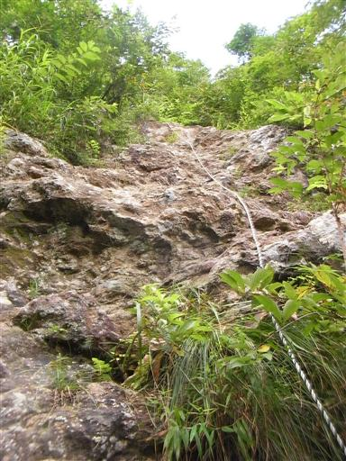
岸壁に囲まれた深い谷を見渡す。
この辺りの景観は巻機山の下山時に見た景観とよく似ている。
やはり同じ越後の山ということで、山容も似ているのだろう。
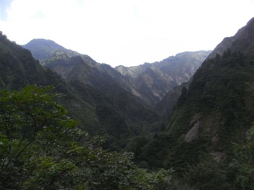
目の前に屏風のように聳える岩壁に続く、一本の細い尾根を登っていく。
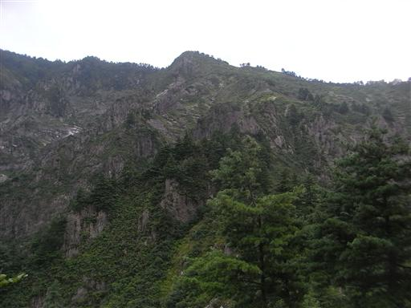
ミヤマママコナ。かなり発音しにくい名前の花だ。
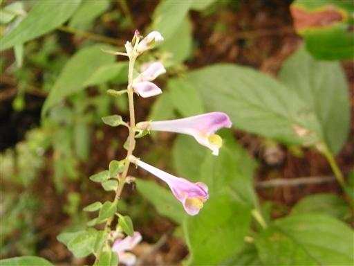
ホツツジ。あちらこちらに咲いている。
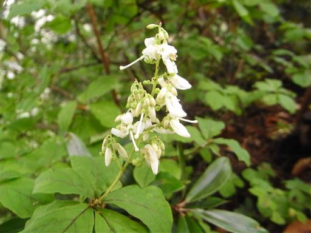
細い岩の上を歩く。荷物が重いのでバランスが重要だ。
高度感はさほどない。
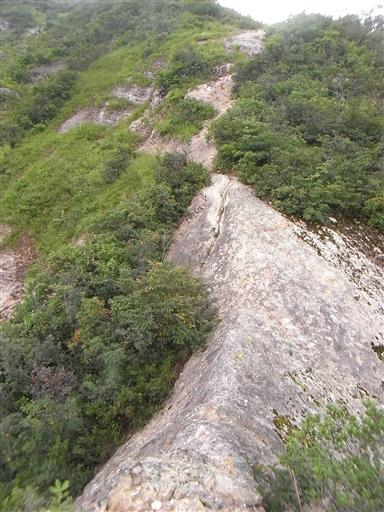
途中で展望が開ける。北の方は青空が広がっている。
中央に見えるのは鍋倉山だ。
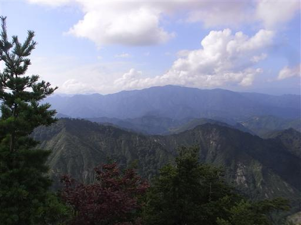
足元に切れ落ちる岩壁。すばらしい光景だ。
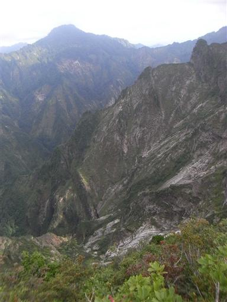
風の影響か、太い木の幹が折れている。
しかし折れた先を見ると葉をつけているので、木はまだ生きているようだ。
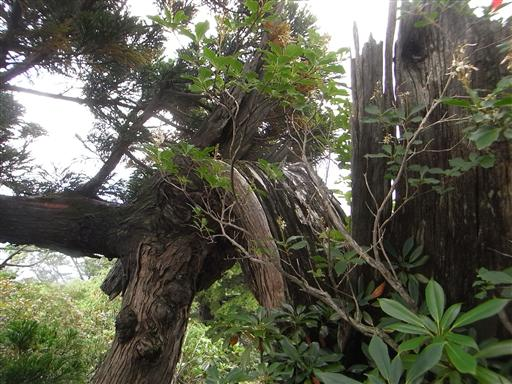
稜線上の登山道は藪に覆われていて歩きにくい。
登山道の整備が行われていないようで、盛夏に登るにはちょっと辛い山だ。
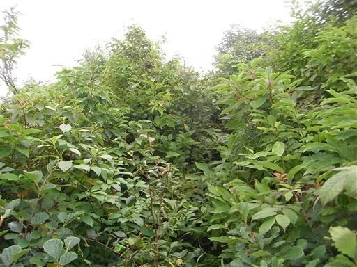
御神楽岳に続く尾根はちょうど半分雲に覆われている。
展望のよさそうな尾根だが視界も半分だ。

斜面にはタカネマツムシソウがたくさん咲いている。

ツリガネニンジン。
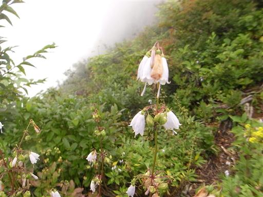
道にぽっかりと穴が開いている。
その周辺も土台が崩れ落ちているようで、
知らずに足を乗せるとまっさかさまに落っこちそうだ。
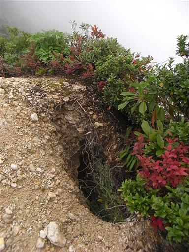
目の前に御神楽岳の山頂部が見えてきた。
山頂までもう少しだ。
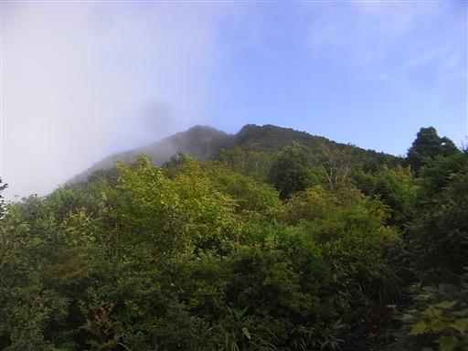
16:25 御神楽岳山頂到着。標高1387m。
奥多摩の御前山よりも標高が低い低山なのだが、
暑かったせいか、なかなか厳しい登りだった。
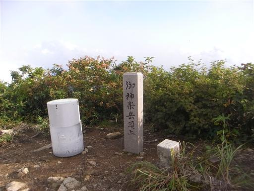
山頂からの展望。尾根道からの展望と同じで反対側は雲で真っ白だ。
この山頂からは見事な岩壁を持つ水晶尾根が見えるはずだが、
今日の天気では無理。明日に期待だ。
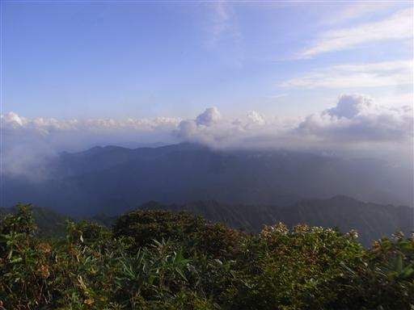
本日泊まる避難小屋は本名御神楽から少し下ったところにある。
本名御神楽に向かうため、藪っぽい道に突入する。
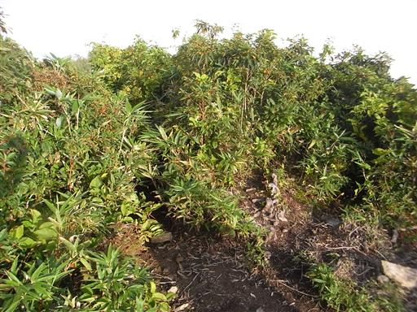
御神楽岳-本名御神楽間は藪だらけでかなり酷い道だ。
ここを歩く人はほとんどいないと思われる。
しかも、首の後ろを蜂かアブに刺されてしまう。
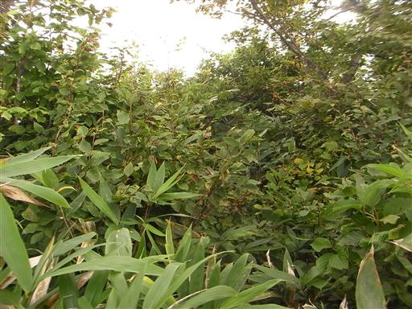
足元にはところどころにキノコが生えている。
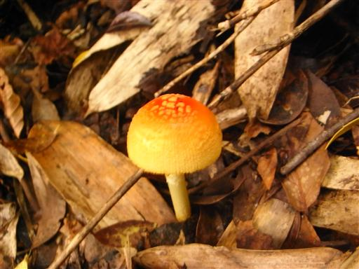
17:06 本名御神楽山頂到着。標高1266m。
こちらの山頂は福島県にあり、そちらから通じるきれいな登山道がある。
なぜ間の稜線を歩く人はいないのだろうか…？
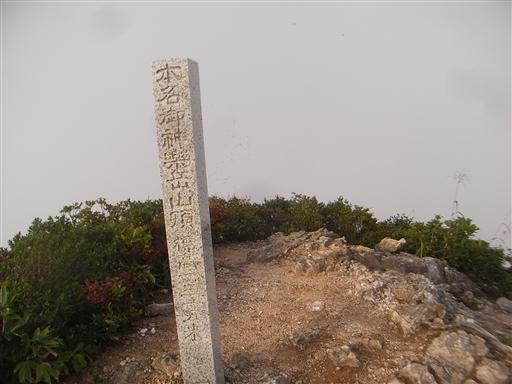
17:16 本名御神楽からは天国のような歩きやすい道を通り、
避難小屋に到着する。標高1100m。
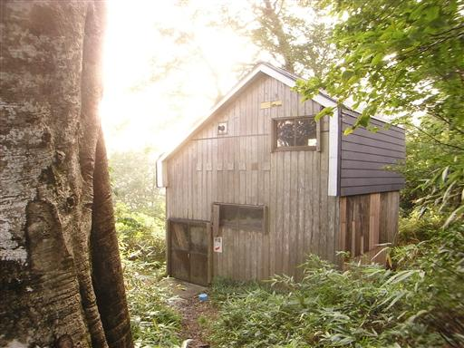
小屋の中は1階はそこそこきれいだが、2階は埃が積もっている。
誰もおらず、今日ここに泊まるのは自分ひとりだけのようだ。
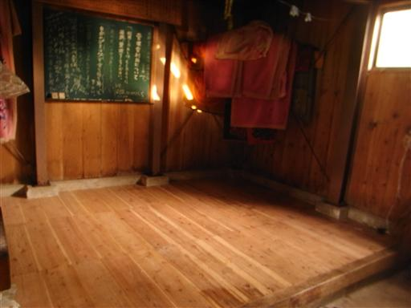
小屋から200mほど歩いたところに水場がある。
水はチョロチョロとしか出ていないが、ホースが置いてあるため非常に水が汲みやすい。
ささやかな工夫だがありがたい。